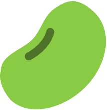

즐거운 피부 자신감, 비플레인
1. 혁신을 향한 끊임없는 추구
변치 않는 결과
비플레인은 전통적 원료의 효능에 최첨단 과학의 힘을 더하여, 순하면서도 강력한 효과를 발휘하는 탁월한 제품들을 개발하고 있습니다.
전통적 원료가 가진 힘을 극대화하기 위해서는 더욱 혁신적인 개발 과정이 필요하기 때문에 원료, 기술, 그리고 효능에 대해 깊이 있는 연구를 지속하며, 기술의 한계에 타협하지 않고 끊임없이 도전합니다.
이러한 노력들을 통해 고객들에게 신뢰받는 다양한 스킨케어 솔루션을 만들어왔고, 앞으로도 지속적인 혁신을 통해 더욱 좋은 제품들을 선보이겠습니다.